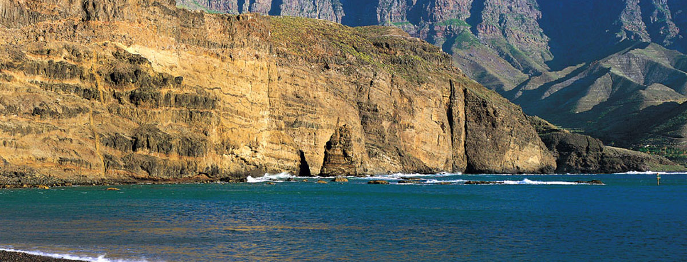
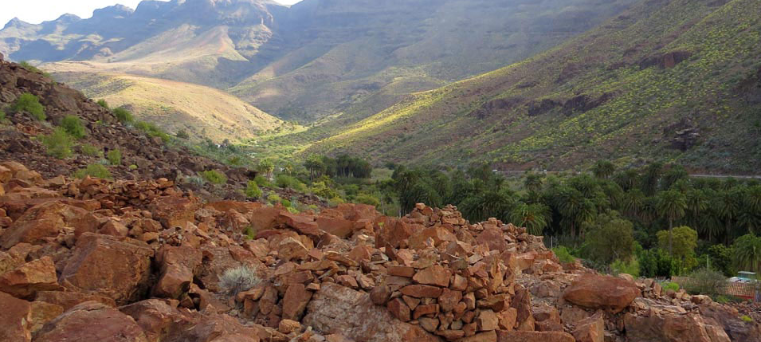

Gáldar
Cueva Pintada
Uno de los espacios arqueológicos más conocidos de Gran Canaria, clave para entender la vida de la sociedad aborigen y su riqueza cultural.
Otros yacimientos y espacios arqueológicos de Gran Canaria que ayudan a comprender mejor la riqueza patrimonial de la isla.
Patrimonio arqueológico
Además del Cenobio de Valerón, Gran Canaria cuenta con otros espacios arqueológicos de gran valor histórico y cultural. Esta sección reúne algunos de los yacimientos más representativos de la isla.
Gáldar
Uno de los espacios arqueológicos más conocidos de Gran Canaria, clave para entender la vida de la sociedad aborigen y su riqueza cultural.

Agaete
Un yacimiento funerario de gran valor patrimonial que muestra otra dimensión de la historia prehispánica de la isla.

Arteara
Un enclave funerario emblemático del sur de Gran Canaria que destaca por su dimensión histórica y su integración en el paisaje.
Red arqueológica insular
La riqueza arqueológica de Gran Canaria se expresa en yacimientos de distintas características, desde espacios habitacionales hasta áreas funerarias o enclaves de almacenamiento colectivo como el Cenobio de Valerón.
Descubrir la diversidad del patrimonio arqueológico de Gran Canaria permite comprender mejor la historia de la isla y valorar la importancia de su conservación.
Volver arriba